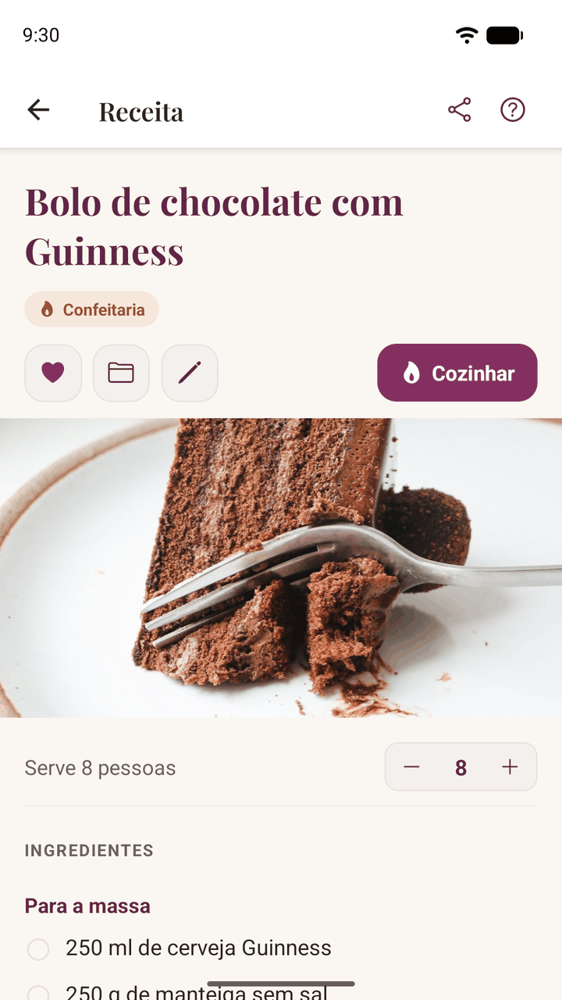
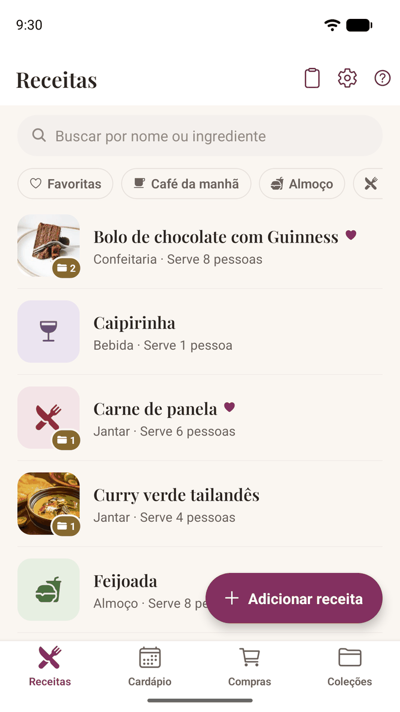
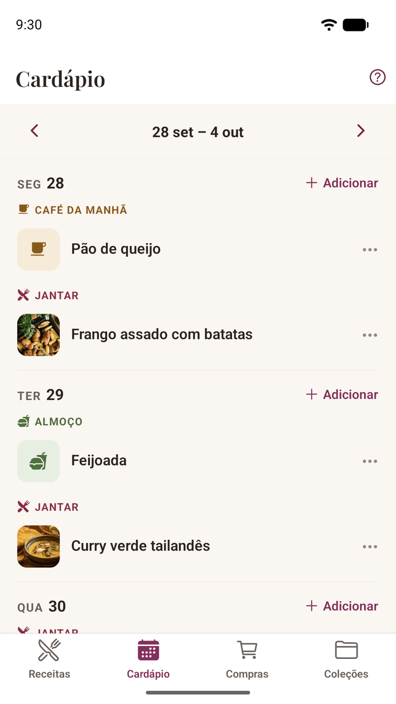
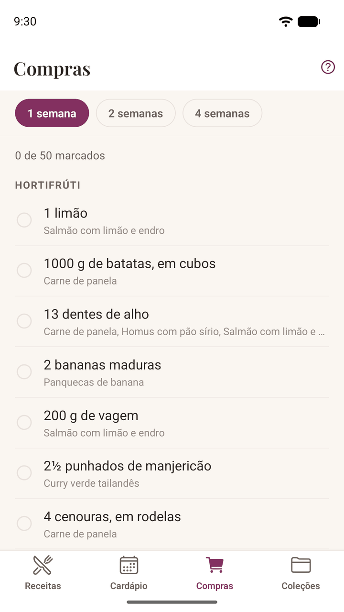
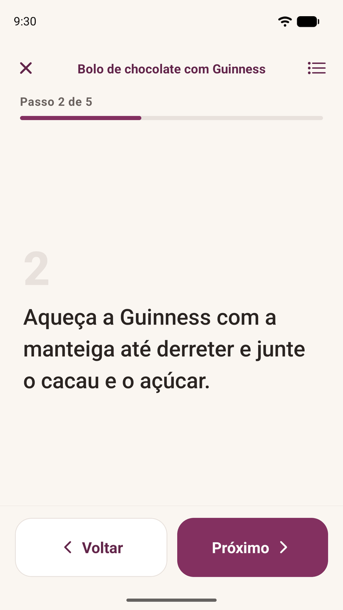
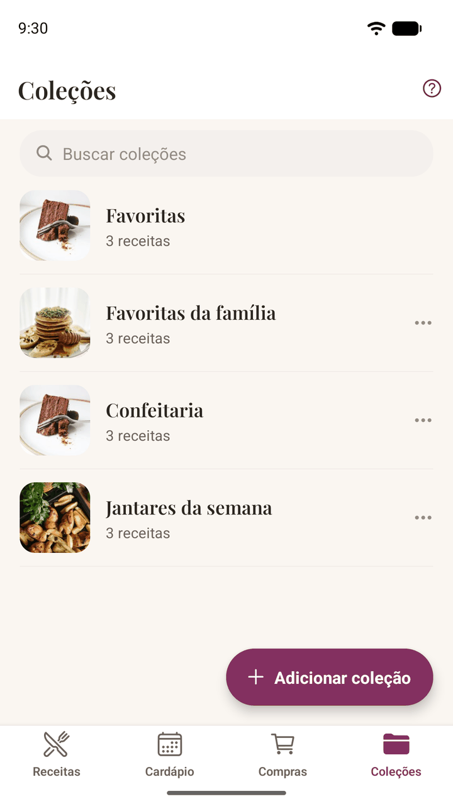

Chega de capturas de tela, favoritos e anotações soltas. Importe uma receita de um link ou fotografe a página de um livro de receitas, organize a semana a partir dela e leve a lista de compras para o mercado. Tudo fica no seu celular: sem conta, sem assinatura, e funciona até sem internet.
Para Android, em português, inglês e espanhol.


Tudo o que é preciso para guardar as receitas que você ama e realmente cozinhá-las, e nada em que você tenha que se cadastrar, sincronizar ou pagar todo mês.
Importe de qualquer site de receitas ou cole o texto de um post do Instagram ou do TikTok. O Damson Kitchen separa os ingredientes e o modo de preparo, e organiza tudo em seções quando a receita tem.
Fotografe a página de um livro, uma ficha de receita ou uma anotação à mão, e o texto é lido na hora. Essa leitura acontece no seu celular: nenhuma foto das suas receitas é enviada. Uma receita longa pode ser escaneada página por página.
Um passo de cada vez, com letra grande que dá para ler de longe e com as mãos sujas de farinha. A tela não apaga enquanto você cozinha, e os ingredientes estão sempre a um toque.
Coloque as receitas nos dias em que você vai prepará-las, numa semana que começa no dia em que a sua começa. Dê um nome a um almoço de aniversário e diga para quantas pessoas vai cozinhar: as quantidades se ajustam sozinhas.
Ela é montada a partir das refeições que você realmente planejou, agrupada por seção do mercado para você não ficar indo e voltando entre os corredores. Duas receitas com farinha viram uma linha só, não duas.
Agrupe suas receitas em coleções: jantares da semana, doces de Natal, marmitas. Marque com um coração as que você repete, filtre por café da manhã ou sobremesa, e busque por ingrediente para achar tudo o que você faz com limão.
Mude o número de porções e todas as quantidades se ajustam, em frações que você realmente usaria, não em decimais estranhos. A receita sempre guarda as quantidades originais.
Tudo fica no seu celular: nada é enviado e nada é compartilhado. Quando trocar de celular, salve toda a sua coleção num único arquivo de backup e leve com você.
Tire uma foto do que você cozinhou e adicione. Anote o ajuste que deu certo ou a substituição que quer lembrar. Quando você importa de um link, trazemos o texto, nunca a foto de outra pessoa.
Envie por mensagem ou e-mail uma receita que você escreveu, como texto que qualquer pessoa lê sem instalar nada. As receitas importadas enviam o link original, para que o crédito continue com quem a escreveu.
Tudo fica no seu próprio celular. Não é preciso criar conta, nada é enviado e nenhum servidor guarda a sua coleção. É por isso que funciona sem internet, e é por isso que ninguém pode tirá-la de você nem começar a cobrar por ela mais tarde.
Só as suas receitas, guardadas do jeito que você gosta, prontas quando você precisar.
Suas receitas já estão no seu celular, então não há nada para carregar. Uma cozinha sem sinal, a casa de um amigo, um sítio no meio do mato: tudo funciona igual.
Um caderno de receitas é algo que se tem, não algo que se aluga. Sem mensalidade e sem o risco de perder a sua coleção por deixar de pagar.
Exporte toda a sua coleção num único arquivo quando quiser e passe você mesmo para um celular novo. Nada te prende, porque não há nada a que se prender.
Ninguém mais vê o que você guarda, nada classifica e nada foi feito para te viciar. É um caderno de receitas, não uma vitrine.
Compartilhe um link de um blog de culinária ou de uma rede social, fotografe a página de um livro, cole um texto ou simplesmente escreva a receita. Vale qualquer origem.
Coloque num dia da semana, diga para quantas pessoas vai cozinhar e deixe a lista de compras se montar sozinha: somada e organizada por seção.
Abra o modo cozinha e siga passo a passo, com a tela acesa e as mãos livres. Depois, anote o que você mudaria.




O Damson Kitchen é grátis no Android. Não é preciso criar conta nem assinar nada: instale e comece com as receitas que você já ama.
O app está em português, inglês e espanhol, e lê receitas nos três idiomas: você pode guardar uma receita em inglês num celular em português, e ela se ajusta igualzinho. Os idiomas chegam um de cada vez porque o app lê as receitas que você cola, escreve e fotografa, e saber qual linha é um ingrediente, ou o que significa “1 xícara (chá)”, precisa ser ensinado idioma por idioma.